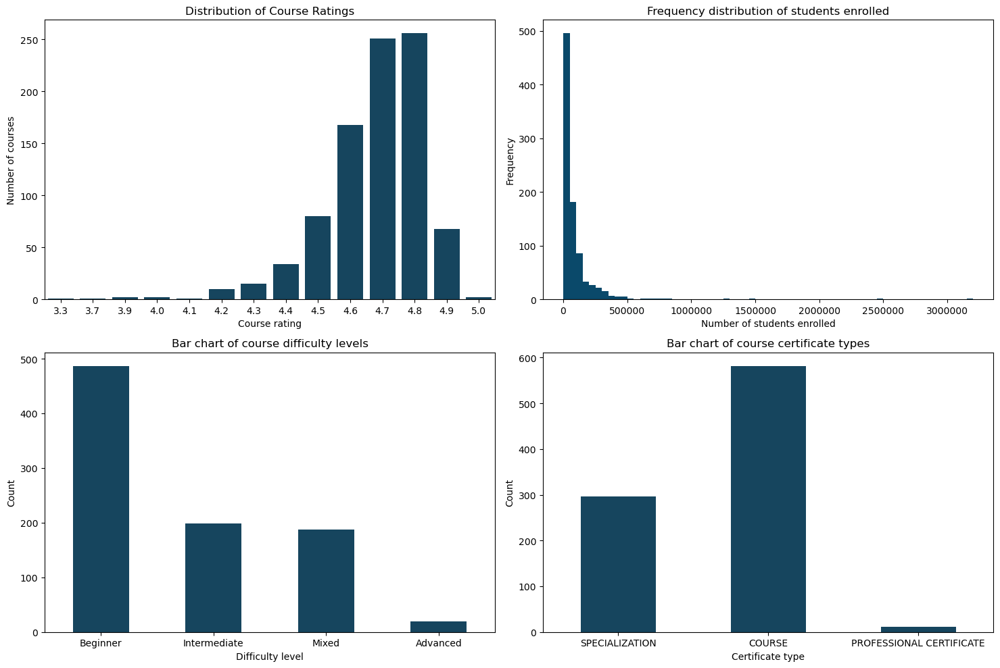
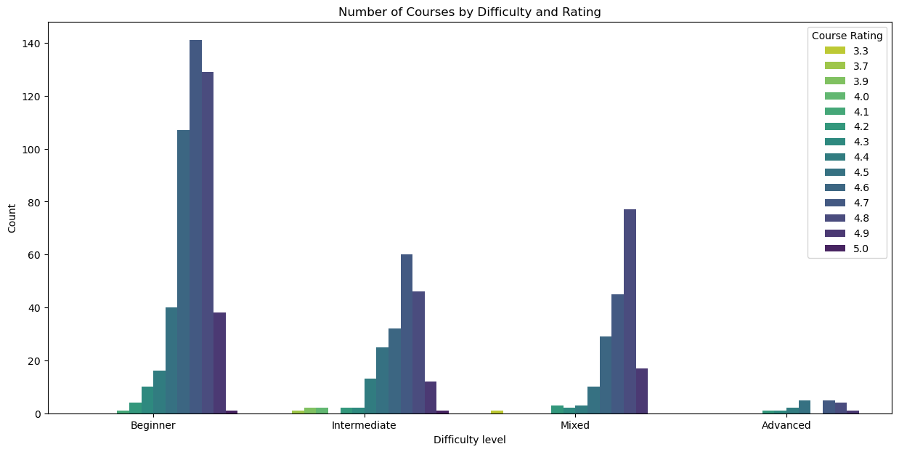
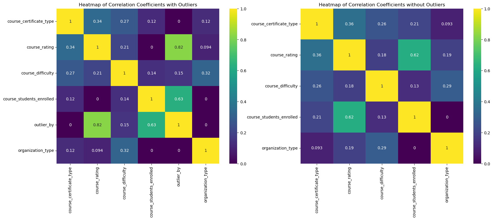

EDA of Coursera Courses Dataset
Exploratory Data Analysis about Coursera courses, including subject, difficulty, ratings, and enrollment. It helps to uncover trends in online education and learner preferences.
Overview
In this project, I perform data preparation and cleaning, followed by Exploratory Data Analysis (EDA) on Coursera courses. The dataset comes from Kaggle it contains details (like course rating, title, organization, ...) about 891 courses offered on Coursera.
Key Highlights
The most common courses were for beginners of type course and had 4.6-4.8 ratings.
- Feature overview overview

Figure 1: Overview of the dataset features.
- Course ratings by category

Figure 2: Course ratings by type.
Figure 3: Course ratings by. difficulty
- Correlation analyses of features.

Figure 4: PhiK correlation coefficients heatmaps.